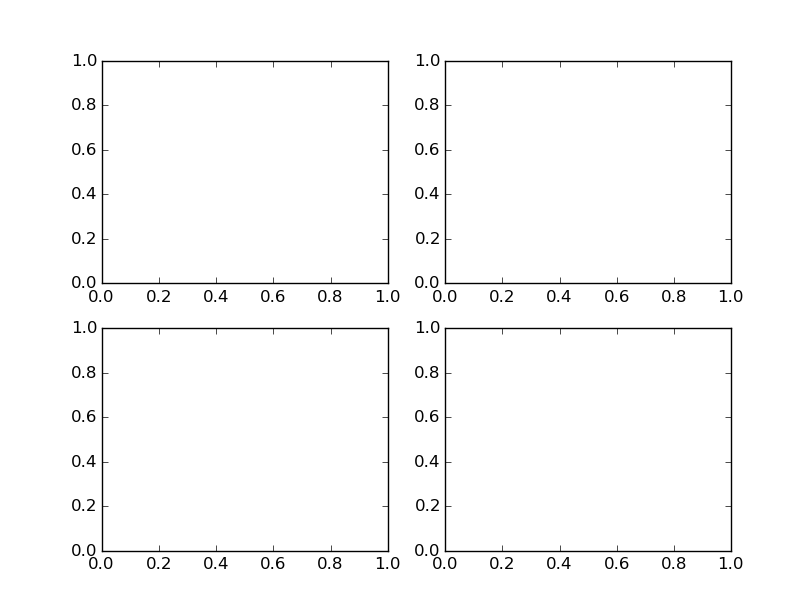

A commonly used feature of matplotlib is the ability to create subplots. Fortunately matplotlib provides many ways to do this. Unfortuantely, matplotlib provides many ways to do this.
It is important to recall the figure of how matplotlib is set-up. There is a figure which is the entire plotting area and each plot has a set of axes and hence a figure can have multiple axes. Thus setting up each axes in a way we want is critical. In my opinion, the object-oriented nature of matplotlib is essential to understand the various commands. Unfortunately many example use the default plt.subplot-type styling and while this is good for quick plots, I believe it obscures the nature of the subplotting and also does not generalise well.
The first way to add subplots is directly through manipulating the figure object using the figure.add_subplot option.
In the following code, we show a simple way to create subplots directly from the figure object.
import matplotlib.pyplot as plt
fig=plt.figure()
ax0=fig.add_subplot(2,2,1)
ax1=fig.add_subplot(2,2,2)
ax2=fig.add_subplot(2,2,3)
ax3=fig.add_subplot(2,2,4)
plt.show()
This code will produce the following figure
Thus we have created a 2x2 grid of subplots, labeled ax0 through ax3. From here, we could then control the axes properties directly through the individual axes objects.